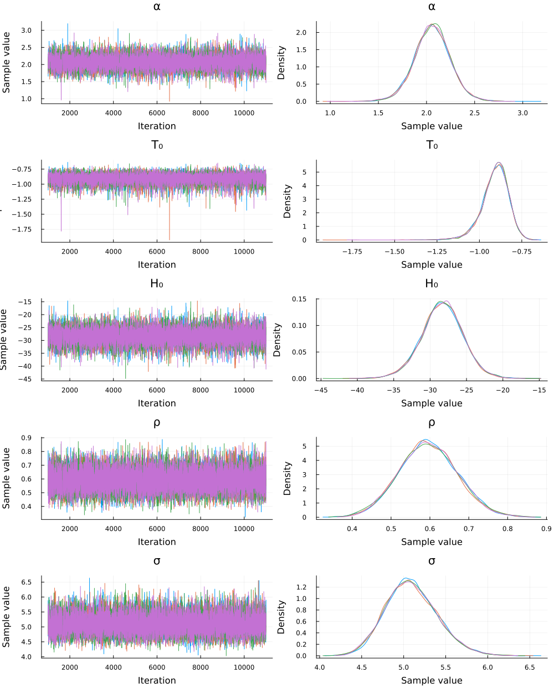
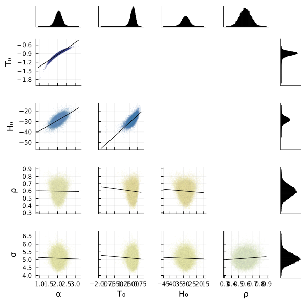

import Pkg
Pkg.activate(@__DIR__)
Pkg.instantiate() Activating project at `~/Teaching/CRA-book/contents/uq`The following code loads the environment and makes sure all needed packages are installed. This should be at the start of most Julia scripts.
In [2]:
import Pkg
Pkg.activate(@__DIR__)
Pkg.instantiate() Activating project at `~/Teaching/CRA-book/contents/uq`In [3]:
using Random
using CSVFiles # load CSV data
using DataFrames # data storage and presentation
using Plots # plotting library
default(fmt = :png)
using StatsPlots # statistical plotting
using Distributions # statistical distribution interface
using PDMats # positive-definite matrices
using Turing # probabilistic programming and MCMC
using Optim # optimization libraryIn [4]:
Random.seed!(1)TaskLocalRNG()First, we’ll load the data we will use for calibration. The sea-level data was obtained from Australia’s Commonwealth Scientific and Industrial Research Organization (CSIRO) and is described in (Church & White, 2011). This reconstruction of global mean sea levels spans 1880–2019. has three columns: 1. Time in years (the fractions correspond to months); 2. Global mean sea-level in \(mm\) (relative to the 1961-1990 mean); 3. Standard deviation of the observational error in \(mm\).
The GMT data was obtained from the HadCRUT5 website (Morice et al., 2021). It has a similar structure: a header and comma-delimited. This file also has four columns, along with a header: 1. Time in years; 2. Annual mean temperature anomaly (relative to the 1961-1990 mean); 3. The lower end of the 95% confidence interval; 4. The upper end of the 95% confidence interval.
In [17]:
# load data files
slr_fname = "https://hpc.csiro.au/users/326141/Sea_Level_data/gmsl_files/CSIRO_Recons_gmsl_yr_2019.csv"
slr_data = DataFrame(load(slr_fname))
gmt_fname = "https://www.metoffice.gov.uk/hadobs/hadcrut5/data/current/analysis/diagnostics/" * "HadCRUT.5.0.1.0.analysis.summary_series.global.annual.csv"
gmt_data = DataFrame(load(gmt_fname))
slr_data[:, :Time] = slr_data[:, :Time] .- 0.5; # remove 0.5 from Times
dat = leftjoin(slr_data, gmt_data, on="Time") # join data frames on time
select!(dat, [1, 2, 4]) # drop columns we don't need
rename!(dat, "Time" => "year", "GMSL (mm)" => "gmsl", "Anomaly (deg C)" => "temp")
first(dat, 6)| Row | year | gmsl | temp |
|---|---|---|---|
| Float64 | Float64 | Float64? | |
| 1 | 1880.0 | -30.3 | -0.315832 |
| 2 | 1881.0 | -24.7 | -0.232246 |
| 3 | 1882.0 | -41.5 | -0.29553 |
| 4 | 1883.0 | -36.2 | -0.346474 |
| 5 | 1884.0 | -15.3 | -0.49232 |
| 6 | 1885.0 | -16.8 | -0.471124 |
Next, let’s plot the data series.
In [6]:
p1 = @df dat scatter(:year, :temp, ylabel="°C", label="Global Mean Temperature")
display(p1)
p2 = @df dat scatter(:year, :gmsl, ylabel="mm", label="Global Mean Sea Level")
display(p2)In this notebook, we will use Markov chain Monte Carlo to calibrate the Rahmstorf (2007) semi-empirical sea-level rise model: \[\frac{dH(t)}{dt} = \alpha (T(t) - T_0),\] where \(H(t)\) is global mean sea-level anomaly (in mm), \(T(t)\) is the global mean surface temperature (in \(^\circ\) C), \(T_0\) is the temperature (in \(^\circ\) C) when sea-level rise is in equilibrium, and \(\alpha\) is the sea-level rise sensitivity to warming. Discretizing this equation with an annual time step yields \[H(t+1) = H(t) + \alpha (T(t) - T_0).\]
A key question is what parameter values for this model are consistent with the data. In some cases, this question is interesting to help us understand the dynamics of the system. More generally, if we can express this consistency in the form of probability distributions, we can then use Monte Carlo sampling to propagate this parametric uncertainty through the model to obtain hindcasts and projections.
First, we need a function which represents the Rahmstorf (2007) model. This requires three parameters: - \(\alpha\); - \(T_0\); - \(H_0\) (the initial sea-level anomaly).
We also need to pass in the temperature data. The resulting function is below.
In [7]:
function rahmstorf_model(α, T₀, H₀, temp_data)
temp_effect = α .* (temp_data .- T₀)
slr_predict = cumsum(temp_effect) .+ H₀
return slr_predict
endrahmstorf_model (generic function with 1 method)Next, let’s specify the statistical model. Denote the residuals as \[R(\mathbf{x}, t)=y_t - F(\mathbf{x}, t),\] where \(y_t\) is the data at time \(t\) and \(F(\mathbf{x}, t)\) is the model output at time \(t\) with parameters \(\mathbf{x} = (\alpha, T_0, H_0)\).
We will assume \(R(\mathbf{x}, t)\) is an AR(1) process, i.e. \[\begin{gather*} R(\mathbf{x}, t) = \rho z(\mathbf{x}, t-1) + \omega_t, \quad \omega_t \sim \text{Normal}(0, \sigma^2) \end{gather*} \]
The unconditional variance of an AR(1) process is \[\text{Var}(z) = \frac{\sigma^2}{1-\rho^2},\] so the likelihood for \(R\) (abusing notation to suppress referencing the parameters) can be written as: \[ \begin{gather*} R_1 \sim \text{Normal}(0, \sigma/\sqrt{1-\rho^2}) \\ R_t \sim \text{Normal}(\rho R_{t-1}, \sigma) \end{gather*} \]
The last step before we can write our statistical model is to select priors. We will choose relatively uninformative priors for \(\alpha\), \(T_0\), and \(H_0\), using normal distributions. For the scale parameters \(\tau\) and \(\sigma\), we will choose truncated normal distributions to ensure that they take only positive values. We will also use a uniform prior for \(\rho\) over the interval \([-1, 1]\), as \(|\rho| < 1\).
In [8]:
@model function slr_posterior(sealevels, temps)
## define priors
α ~ truncated(Normal(0, 2); lower=0)
T₀ ~ Normal(0, 5)
H₀ ~ Normal(-100, 50)
ρ ~ Uniform(-1, 1)
σ ~ truncated(Normal(0, 5); lower=0)
## define likelihood
# evaluate model
slr_predict = rahmstorf_model(α, T₀, H₀, temps)
# compute likelihood
n = length(temps)
sealevels[1] ~ Normal(slr_predict[1], σ / sqrt(1-ρ^2)) # initial value
# loop over subsequent values and add likelihood
for i = 2:n
sealevels[i] ~ Normal(ρ * (sealevels[i-1] - slr_predict[i-1]) + slr_predict[i], σ)
end
endslr_posterior (generic function with 2 methods)To sample from the posterior, we use Turing.sample(). This requires setting the sampler; we will use the No U-Turn Sampler (Hoffman & Gelman, 2014), which is an adaptive Hamiltonian Monte Carlo sampler.
We will also use multiple chains, which will let us look at certain convergence diagnostics.
In [9]:
model = slr_posterior(dat[!, 2], dat[!, 3]) # load the data into the model object
n_per_chain = 10000
n_chains = 4
chain = sample(model, NUTS(), MCMCThreads(), n_per_chain, n_chains; drop_warmup=true) # drop chain warmup iterations┌ Warning: Only a single thread available: MCMC chains are not sampled in parallel
└ @ AbstractMCMC ~/.julia/packages/AbstractMCMC/F9Hbk/src/sample.jl:296
┌ Info: Found initial step size
└ ϵ = 0.00078125
┌ Info: Found initial step size
└ ϵ = 0.0015625
┌ Info: Found initial step size
└ ϵ = 0.00078125
┌ Info: Found initial step size
└ ϵ = 0.00625
Sampling (1 threads): 100%|█████████████████████████████| Time: 0:00:58Chains MCMC chain (10000×17×4 Array{Float64, 3}):
Iterations = 1001:1:11000
Number of chains = 4
Samples per chain = 10000
Wall duration = 91.68 seconds
Compute duration = 89.01 seconds
parameters = α, T₀, H₀, ρ, σ
internals = lp, n_steps, is_accept, acceptance_rate, log_density, hamiltonian_energy, hamiltonian_energy_error, max_hamiltonian_energy_error, tree_depth, numerical_error, step_size, nom_step_size
Summary Statistics
parameters mean std naive_se mcse ess rhat ⋯
Symbol Float64 Float64 Float64 Float64 Float64 Float64 ⋯
α 2.0597 0.1876 0.0009 0.0017 12492.4117 1.0001 ⋯
T₀ -0.9073 0.0793 0.0004 0.0007 11165.8600 1.0001 ⋯
H₀ -28.3468 2.9007 0.0145 0.0237 14146.5801 1.0001 ⋯
ρ 0.5959 0.0757 0.0004 0.0006 16793.6076 1.0001 ⋯
σ 5.0955 0.3108 0.0016 0.0024 18364.8274 1.0001 ⋯
1 column omitted
Quantiles
parameters 2.5% 25.0% 50.0% 75.0% 97.5%
Symbol Float64 Float64 Float64 Float64 Float64
α 1.6858 1.9389 2.0605 2.1805 2.4314
T₀ -1.0842 -0.9516 -0.8996 -0.8543 -0.7739
H₀ -34.2098 -30.1642 -28.3117 -26.4715 -22.7275
ρ 0.4500 0.5446 0.5945 0.6461 0.7464
σ 4.5322 4.8809 5.0773 5.2948 5.7509
The first step in diagnosing convergence is to look at the traceplots and marginal distributions of the chains. If multiple chains, which were initialized at various values, have the same distribution, that is evidence of convergence.
In [10]:
plot(chain)
We can also look at the Gelman-Rubin statistic \(\hat{R}\), which is based on comparing the variation between chains to the variation within a single chain. The closer \(\hat{R}\) is to 1, the more evidence for convergence, as this suggests the between-chain variation is close to zero.
In [16]:
gelmandiag(chain)Gelman, Rubin, and Brooks diagnostic parameters psrf psrfci Symbol Float64 Float64 α 1.0002 1.0006 T₀ 1.0004 1.0008 H₀ 1.0002 1.0005 ρ 1.0002 1.0004 σ 1.0002 1.0008
The previous plot let us look at the marginal posterior distributions, that is, the distribution for that parameter only. However, we are more commonly interested in the joint distribution, which accounts for correlations between the parameters. We can see these correlations with a cornerplot.
In [12]:
corner(chain)
We can see, for example, that \(\alpha\), \(T_0\), and \(H_0\) are highly positively correlated with each other. This makes sense, as a larger value of \(\alpha\) means that sea-level is more sensitive to temperature increases over \(T_0\). As a result, if \(T_0\) is low and \(\alpha\) is high, the resulting modeled sea level anomaly will be larger than the observations. Conversely, if \(T_0\) is high and \(\alpha\) is low, the model will under-predict the level of sea-level rise. Similar logic also explains why \(H_0\) should be positively correlated with \(\alpha\) and \(T_0\).